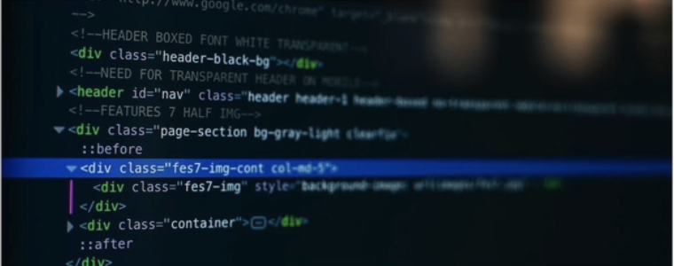

The Basic Language of the Web: HTML
All modern websites and web applications are built using three fundamental technologies: HTML, CSS, and JavaScript. These are the languages of the web.
What is HTML?
HTML stands for HyperText Markup Language. It's a markup language that web developers use to structure and describe the content of a webpage (not a programming language).
HTML consists of different elements that descire different types of content: paragraphs, links, headings, images, videos, etc. Web browsers understand HTML and render HTML code as websites.
In HTML, each element is made up of 3 parts:
- The opening tag
- The closing tag
- The actual element
You can learn more at MDN Web Docs.
Why should you learn HTML?
There are countless reasons for learning the fundamental language of the web. Here are 5 of them:
- To be able to use the fundamental web dev language
- To hand-craft beautiful websites instead of relyig on tools like Wordpress or Wix
- To impress friends